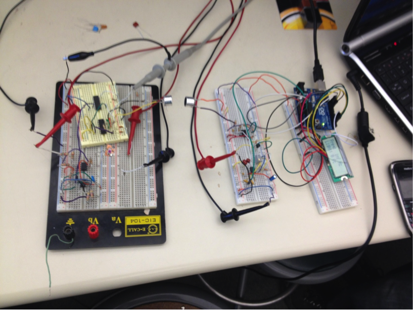
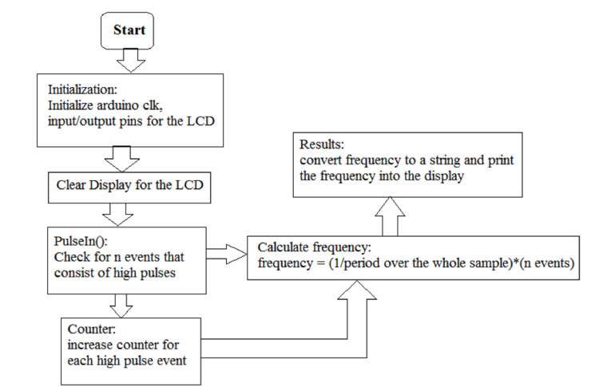

A Rube Goldberg Luxmeter
Summary:
This purposefully complicated circuit implementation explores a fun and challenging way to implement a Luxmeter that measures brightness in foot-candles. The working hardware chains over 10 circuit element blocks together to transmit data ultrasonically over 25ft of air and displays the amount of light to an LCD with an accuracy comparable to commercial Luxmeters. These devices are useful in many applications such as in photography to determine optimal exposure. This page will present the overall architecture of the system and also highlight some of the more eccentric and complicated blocks.
Technical Skill Utilized:
- Analog Circuit Design and Simulation
- Breadboarding and Prototyping
- Microcontroller embedded programming

The Architecture of the System
The system consists of two functional units - a measuring/transmitter unit and a receiver/display unit. The two units communicate using 40kHz-carrier ultrasonic link. Both units use 9V battery power.
Our Fully Working Luxmeter
The transmission side is on the left while the receiver side is on the right. The Tx and Rx transducers are pointed directely at eachother just to the right of the main breadboard.
.
.
.
.
.


Functioning Blocks of the Transmitter Unit and Receiver/Display Unit
The photo diode first converts light-intensity to current which is magnified by the current amplifier. The Current Controlled Oscillator (CCO) takes this current value and converts it into a unique frequency of oscillation. A modulator encodes the signal with a 40 kHz carrier wave. This carrier wave is vital to the ultrasonic communication through air as it is a very high density medium. The signal and its carrier are received by the Rx transducer and amplified such that its information can be extracted by a Phase Lock Loop (PLL) based Tone Detector. A decoder embedded into an Arduino Microprocessor receives square waves from the Tone Detector and displays an accurate amount of foot-candles based off of original light intensity to the LCD.


Current-Controlled Saw-Tooth Oscillator
A 555-timer IC can be configured to operate as a current controlled oscillator. In this configuration, clamping the potential of the "voltage control" pin avoids sensitivity to changes in the supply voltage. The capacitance value C1 is directly related to the output frequency range. A value of 1uF was determined to produce the best spread of frequency.
A 40kHz Pierce Oscillator
Using a piezoelectric crystal, a 40kHz carrier wave signal could be generated using a Pierce Oscillator typology. This block enables this Luxmeter to transmit its data ultrasonically through air up to 25ft.


Transmitter, Receiver, and Frequency Response Characteristics
In order to ensure matching and correct functionality, the transmission characteristics and frequency response of the transducers were verified to information on their data sheets. Data observations show the center frequency to be 40kHz with 34dB of makeup gain required.


Band-Pass Amplifier
This circuit block makes up for signal energy that is lost during ultrasonic transmission. Based on the transmission characteristics of the transducers, this Band-Pass Amplifier was designed and simulated to ensure a gain of 50 in the 40kHz frequency range.
PLL based Tone Decoder
 Running on a 5V power supply, this Tone Decoder IC is tuned to react to and lock on to the 40kHz carrier wave. Capacitor C2 acts as a low pass filter while C3 is an output filter. This block will output 0V when a tone is detected and 5V otherwise.
Running on a 5V power supply, this Tone Decoder IC is tuned to react to and lock on to the 40kHz carrier wave. Capacitor C2 acts as a low pass filter while C3 is an output filter. This block will output 0V when a tone is detected and 5V otherwise.
.
.
.
.
Microprocessor Decoder
An Arduino reads a voltage-based frequency from the tone decoder to calculate and display the amount of foot-candles that the photo-diode reads. The input voltage is sampled at 2.4 kSamples/second which is well above the Nyquist sampling requirement for the input frequency range.